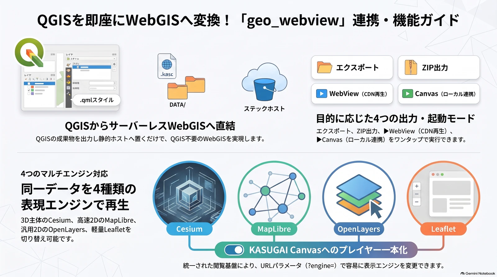

geo_webview — QGIS ⇄ KASUGAI Canvas 連携プラグイン
QGIS と KASUGAI Canvas をつなぐ連携プラグインの公式ドキュメントです。2本柱は Canvas Live View（/live/* 双方向連携・エクスポート不要の常駐 live ビュー）とサーバレス Web 配信（開いている QGIS プロジェクトを .kasc+canvas_data/ パッケージに出力 → 静的ホスト配信）。再生は KASUGAI Canvas のマルチエンジン（Cesium / MapLibre / OpenLayers / Leaflet / GSI Maps / Navara）で行います。

▶ サンプルサイトを開く — geo_webview の出力物を再生する KASUGAI Canvas（Cesium エンジン）の公開デモ。インストール不要でブラウザから確認できます
QGIS と KASUGAI Canvas をつなぐ連携プラグイン
開いている QGIS プロジェクトを.kasc+canvas_data/パッケージに出力し、 KASUGAI Canvas のマルチエンジン（Cesium / MapLibre / OpenLayers / Leaflet / GSI Maps / Navara） で再生する QGIS プラグイン。2本柱は Canvas Live View（/live/*双方向連携の常駐ビュー）とサーバレス構成（出力物は静的ホスティングだけで配信可能）であり、内蔵 HTTP サーバー（起動API・/export-data/配信・画面共有・受領履歴）がそれらを補助します。